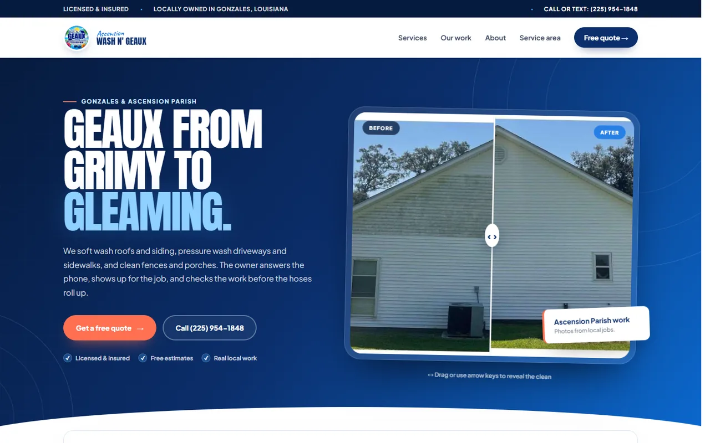
Pressure washing / Local service
Ascension Wash & Geaux
A service-first website built around real project proof, fast estimate requests, clear coverage, and a polished path from browsing to booking.
View live site ↗Selected work / built to feel specific
Local businesses, SaaS products, fan experiences, and experiments. Each project gets its own visual language and its own job to do.
projects across business, product, entertainment, and creative work.

Pressure washing / Local service
A service-first website built around real project proof, fast estimate requests, clear coverage, and a polished path from browsing to booking.
View live site ↗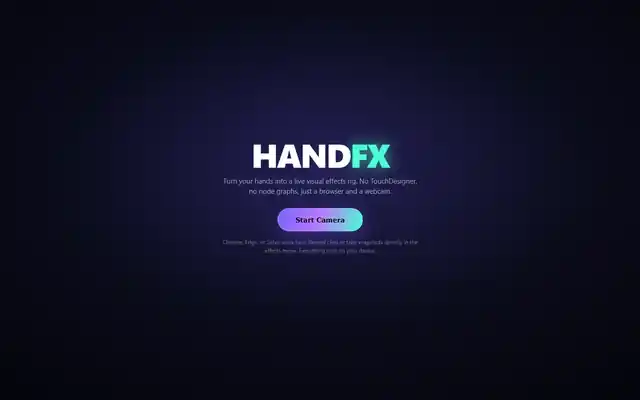
Interactive experience
A browser experience that reacts to webcam hand movement with real-time effects, recording tools, and a product-style interface.
View live site ↗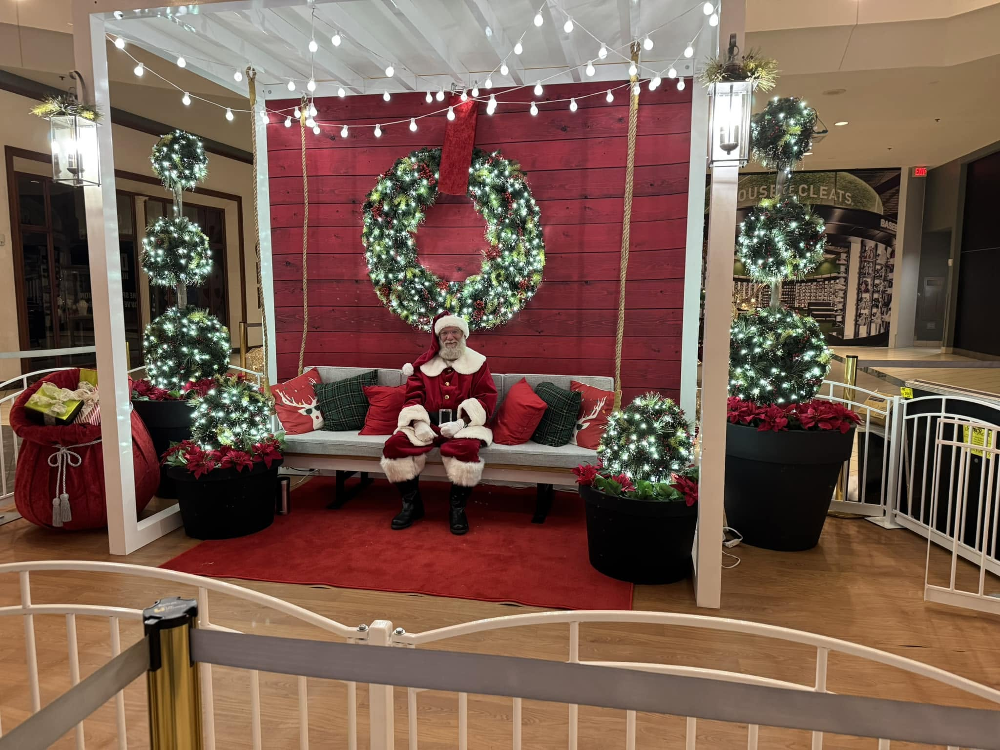
Events / Booking
A warm, photo-led booking experience built around real event moments, visit types, trust, and an easy path to inquire.
View live site ↗
Entertainment / Editorial
A multi-page editorial fan experience with crew stories, timeline content, and cinematic motion that keeps the storytelling moving.
View live site ↗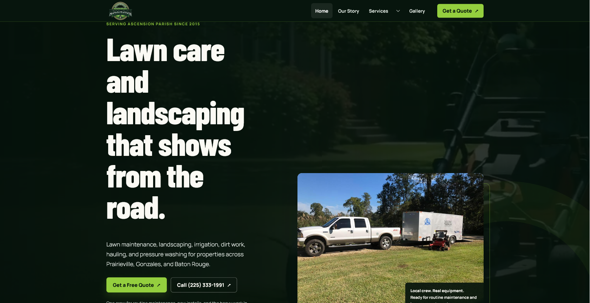
Lawn care / Local service
A practical local-service redesign focused on services, project imagery, reviews, quote intent, and a cleaner mobile experience.
View live site ↗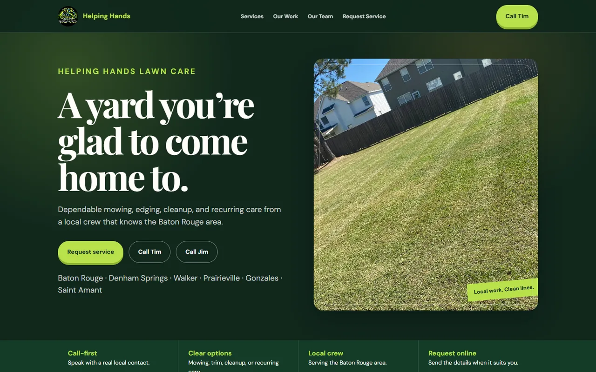
Lawn care / Local business
A straightforward local-service build that makes the work easy to understand, the coverage easy to find, and estimates easy to start.
View live site ↗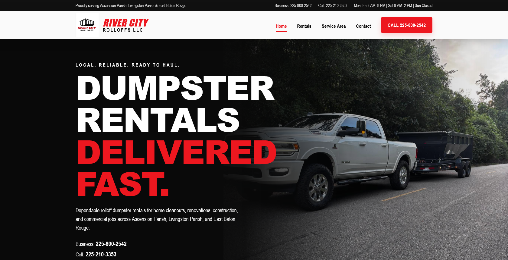
Dumpster rentals / Local service
A bold rental site built around fast requests, clear service areas, real jobsite proof, and direct call-or-text paths.
View live site ↗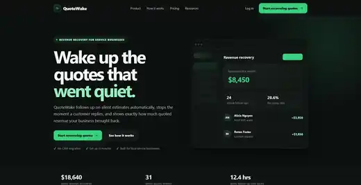
SaaS / Revenue automation
A focused SaaS product for service businesses that follows up on quiet estimates and makes recovered revenue visible.
View live site ↗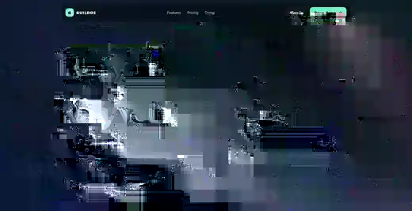
SaaS / Gaming communities
A Discord-first command center for events, rosters, recruitment, attendance, and officer coordination.
View live site ↗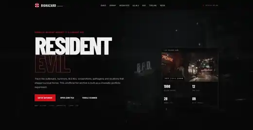
Fan project / Archive experience
A fan-built biohazard archive with pathogen research, organizations, weapons, dossiers, and survival-horror interface details.
View live site ↗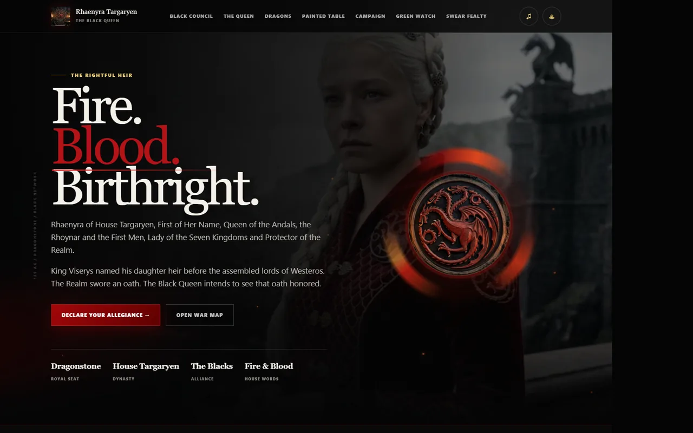
Fantasy campaign experience
Interactive maps, character and dragon systems, ravens, ranks, and a full visual world built around a fictional campaign.
View live site ↗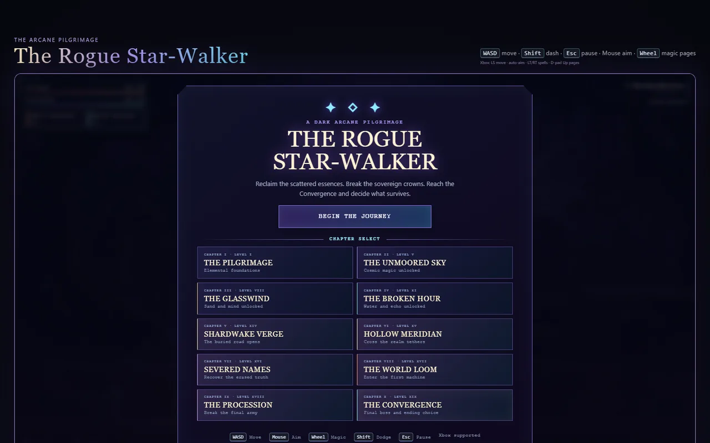
Browser RPG
A playable fantasy interface with combat, character systems, progression, and game-like UI built directly for the browser.
View live site ↗